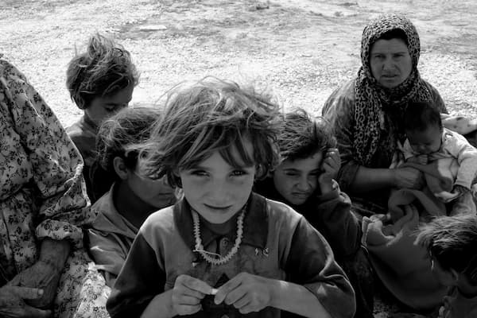
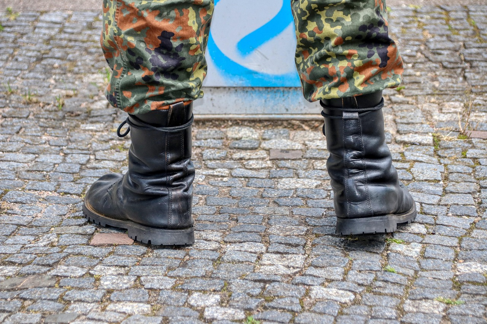
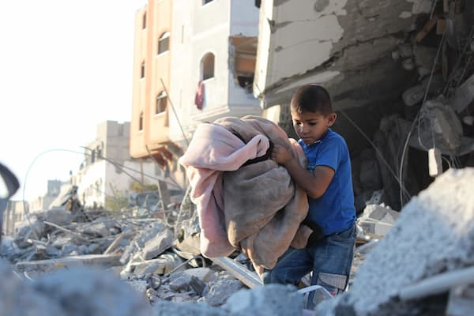
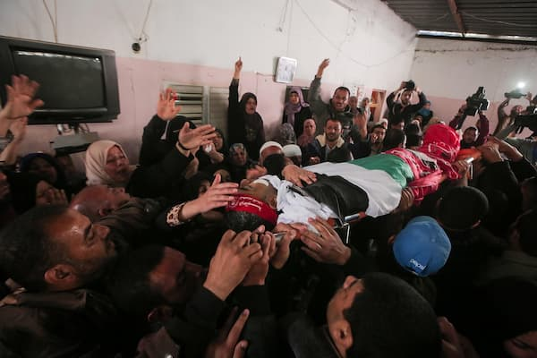

Historie
Hvad er Palæstina?
Palæstina er et område i Mellemøsten ved Middelhavet, hvor det palæstinensiske folk bor. I dag består området primært af Vestbredden og Gaza-striben, og mange palæstinensere ønsker deres egen stat, kaldet Staten Palæstina. Historisk har området været styret af flere forskellige magter, blandt andet Det Osmanniske Rige indtil slutningen af Første Verdenskrig. Derefter blev området administreret af Storbritannien. I 1948 blev Israel oprettet, hvilket førte til konflikt mellem israelere og palæstinensere om land og selvbestemmelse. Denne konflikt kaldes Den israelsk-palæstinensiske konflikt. Mange palæstinensere mistede deres hjem og blev flygtninge under krigen, som fulgte oprettelsen af Israel.

Hvad skete der under nakbaren i 1948?
Nakbaen betyder “katastrofen” på arabisk, og det var præcis, hvad det var for palæstinenserne. I 1948, da Israel blev oprettet og Den arabisk-israelske krig 1948 brød ud, blev omkring 700.000 palæstinensere tvunget til at flygte fra deres hjem. Landsbyer blev brændt eller ødelagt, familier blev adskilt, og mange mistede alt, hvad de ejede. Flere generationer senere har mange stadig ikke haft lov til at vende tilbage. Nakbaen er ikke bare en historisk begivenhed. Det er et sår, der stadig gør ondt, en historie om tab, smerte og drømmen om et hjem, de aldrig fik tilbage

Hvad vil det sige at isreal har bosat sig i Paleæstina?
Israelske bosættelser vil sige at Israel bygger nye boligområder til israelere på land i for det meste Vestbredden, som tilhøre palæstinenserne.
Palæstinensere oplever ofte, at deres jord bliver taget eller konfiskeret, så der kan bygges bosættelser. Nogle gange sker det også med militær beskyttelse, hvor israelske soldater er til stede, og der har været tilfælde af vold, sammenstød og tvangsflytninger af palæstinensiske familier.
Derfor ser mange palæstinensere bosættelserne som en måde, hvor Israel gradvist overtager mere land. Mange lande og FN mener også, at bosættelserne strider mod international lov, og de er et stort stridspunkt i Den israelsk-palæstinensiske konflikt.

Hvad er tilstanden nu?
Siden 7. oktober 2023 har konflikten mellem Israel og palæstinensiske grupper, især Hamas, været voldsom. Konflikten startede med et stort angreb på Israel, som dræbte mange og tog gidsler, hvorefter Israel gik til massiv modoffensiv mod Gaza-striben.
Kampen har kostet tusinder af liv, især civile i Gaza, og skabt en alvorlig humanitær krise med mangel på mad, vand og medicin. Der har været korte perioder med våbenhvile, men spændingerne fortsætter, og konflikten har også involveret andre grupper i regionen. Situationen er stadig ustabil, og millioner af mennesker lever under hårde forhold.

Hvor mange dødsfald har der været siden 1948?
Siden oprettelsen af Israel i 1948 har der været flere krige, opstande og militære konflikter mellem Israel og palæstinenserne. I løbet af disse konflikter er over 130.000 palæstinensere blevet dræbt, ifølge tal fra blandt andet Palestinian Central Bureau of Statistics.
Mange dødsfald skete under krigen i 1948, under de to palæstinensiske opstande kaldet intifadaerne, samt i flere krige i Gaza-striben. Særligt siden oktober 2023 er antallet af dræbte steget kraftigt på grund af den store krig mellem Israel og den palæstinensiske gruppe Hamas.
